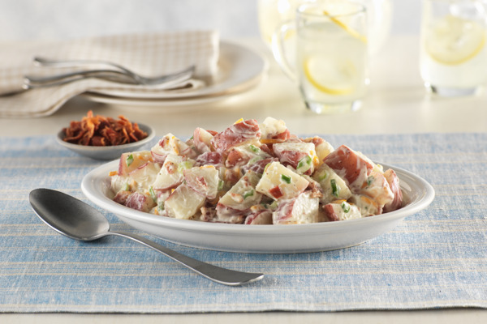

Potato salad

Some very good potato salad
This is my mother's recipe. Everyone, German or not, loves it. It is easy to double the recipe as well. I often bring it to potlucks, and we also have it at home on special occasions. There are usually no leftovers, but if there are, they don't last long!
Ingredients
- 3 cups diced peeled potatoes
- 4 slices bacon
- 1 small onion
- 1/4 cup white vinegar
- 2 tablespoons water
- 3 tablespoons white sugar
- 1 teaspoon salt
- 1/8 teaspoon ground black pepper
- 1 tablespoon chopped fresh parsley
Directions
- Place the potatoes into a pot, and fill with enough water to cover. Bring to a boil, and cook for about 10 minutes, or until easily pierced with a fork. Drain, and set aside to cool.
- Place the bacon in a large deep skillet over medium-high heat. Fry until browned and crisp, turning as needed. Remove from the pan and set aside.
- Add onion to the bacon grease, and cook over medium heat until browned. Add the vinegar, water, sugar, salt and pepper to the pan. Bring to a boil, then add the potatoes and parsley. Crumble in half of the bacon. Heat through, then transfer to a serving dish. Crumble the remaining bacon over the top, and serve warm.